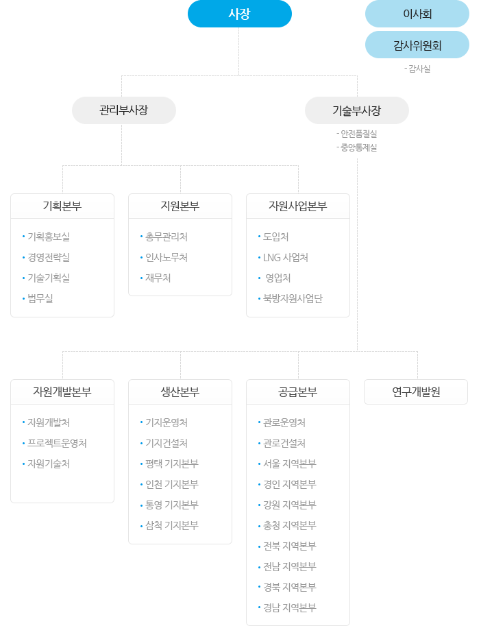

조직도/인원
조직도
6본부 1원 21처 (실,단) 12사업소 (기지본부, 지역본부)

사장
이사회, 감사위원회 - 감사실- 관리부사장
- 기획본부
- 기획홍보실
- 경영전략실
- 기술기획실
- 법무실
- 지원본부
- 총무관리처
- 인사노무처
- 재무처
- 자원사업본부
- 도입처
- LNG 사업처
- 영업처
- 북방자원사업단
- 기획본부
- 기술부사장 (안전품질실,중앙통제실)
- 자원개발본부
- 자원개발처
- 프로젝트운영처
- 자원기술처
- 생산본부
- 기지운영처
- 기지건설처
- 평택 기지본부
- 인천 기지본부
- 통영 기지본부
- 삼척 기지본부
- 공급본부
- 관로운영처
- 관로건설처
- 서울 지역본부
- 경인 지역본부
- 강원 지역본부
- 충청 지역본부
- 전북 지역본부
- 전남 지역본부
- 경북 지역본부
- 경남 지역본부
- 연구개발원
- 자원개발본부
임직원수
(인원단위 : 명)
| 구분 | 2008년 | 2009년 | 2010년 | 2011년 | 2012년 | 2013년 3/4분기 |
||
|---|---|---|---|---|---|---|---|---|
| 임원 | 기관장 | 상임 | 1 | 1 | 1 | 1 | 1 | 1 |
| 비상임 | 0 | 0 | 0 | 0 | 0 | 0 | ||
| 이사 | 상임 | 5 | 6 | 6 | 6 | 6 | 6 | |
| 비상임 | 8 | 8 | 8 | 8 | 8 | 8 | ||
| 감사 | 상임 | 1 | 0 | 0 | 0 | 0 | 0 | |
| 비상임 | 0 | 0 | 0 | 0 | 0 | 0 | ||
| 기타 | 0 | 0 | 0 | 0 | 0 | 0 | ||
| 상임위원계(A) | 7 | 7 | 7 | 7 | 7 | 7 | ||
| 직원 | 정원 | 2,841 | 2,536 | 2,883 | 2,927 | 3,019 | 3,252 | |
| 현원(B) | 2,778 | 2,762 | 2,824 | 2,904 | 3,138 | 3,169 | ||
| 무기계약직 | 0 | 0 | 0 | 0 | 0 | 0 | ||
| 비정규직 | 기간제 | 66 | 44 | 40 | 65 | 48 | 39 | |
| 단시간 | 0 | 0 | 0 | 0 | 0 | 0 | ||
| 기타 | 0 | 0 | 0 | 0 | 0 | 0 | ||
| 소속외인력 | 598 | 622 | 684 | 723 | 849 | 919 | ||
| 임직원총계(A+B) | 2,785 | 2,769 | 2,831 | 2,911 | 3,145 | 3,176 | ||
직급별인원수
2013년 10월 말 기준
| 직급 | 직종 | 인원수 |
|---|---|---|
| 임원 | 임원 | 7 |
| 1급 | 일반직 사무 | 20 |
| 일반직 기술 | 27 | |
| 2급 | 일반직 사무 | 73 |
| 일반직 기술 | 123 | |
| 3급 | 일반직 사무 | 176 |
| 일반직 기술 | 387 | |
| 4-7급 | 일반직 사무 | 298 |
| 일반직 기술 | 1,698 | |
| 기타 | 기타 | 367 |
| 합계 | 3,176 | |